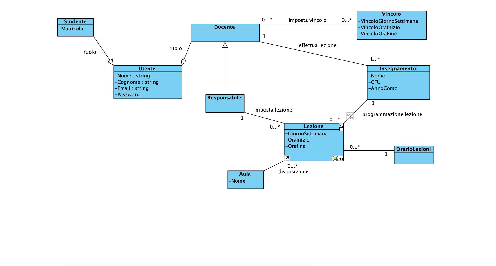
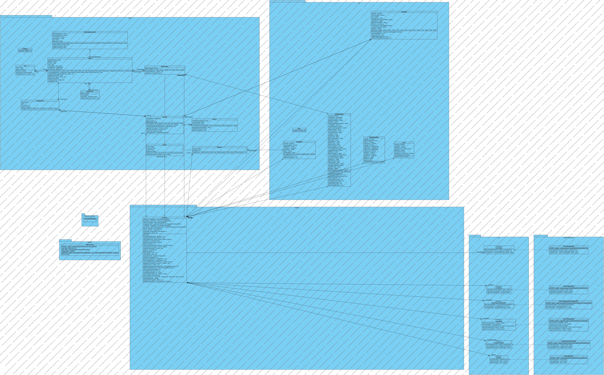

Package model
package model
Architettura dei Package - MODEL
Il package model rappresenta il cuore logico dell'applicazione. Qui sono state implementate le classi che mappano le entità reali dell'università, avvalendosi dei concetti di ereditarietà e polimorfismo.
Qui sotto puoi vedere il Diagramma delle Classi del nostro sistema: * * *
*Gestione delle Utenze e dei Ruoli
- Utente: Classe base che incapsula i concetti fondamentali di autenticazione.
- Responsabile: Gestisce le anagrafiche, alloca le lezioni nelle aule e accetta le richieste.
- Docente: Personale didattico. Possiede vincoli di orario e può richiedere spostamenti.
- Studente: Utente base che visualizza l'orario relativo al proprio anno di corso.
Processi e Struttura
Il sistema gestisce Lezioni, Insegnamenti e Aule, impedendo sovrapposizioni temporali nell'allocazione delle risorse.
Il codice sorgente è stato suddiviso in package per rispettare i principi di modularità * e l'architettura MVC (Model-View-Controller). Qui sotto è illustrato il Diagramma dei Package:
* * *
* *Analisi dei Componenti Logici
*-
*
- model: Rappresenta il cuore logico dell'applicazione e le entità del dominio. *
- controller: Gestisce il flusso dell'applicazione e fa da ponte tra GUI e Database. *
- gui: Contiene le interfacce grafiche con cui interagisce l'utente. *
- dao e database: Gestiscono la connessione e le query verso il database PostgreSQL. *
-
ClassesClassDescription